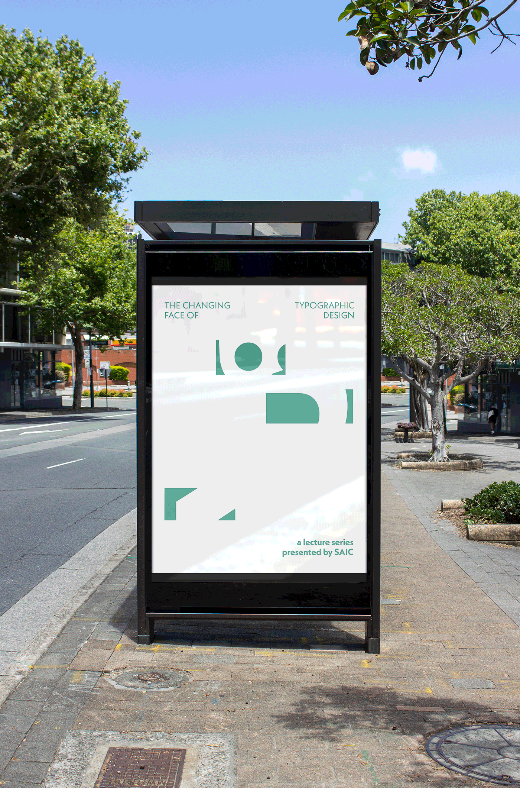
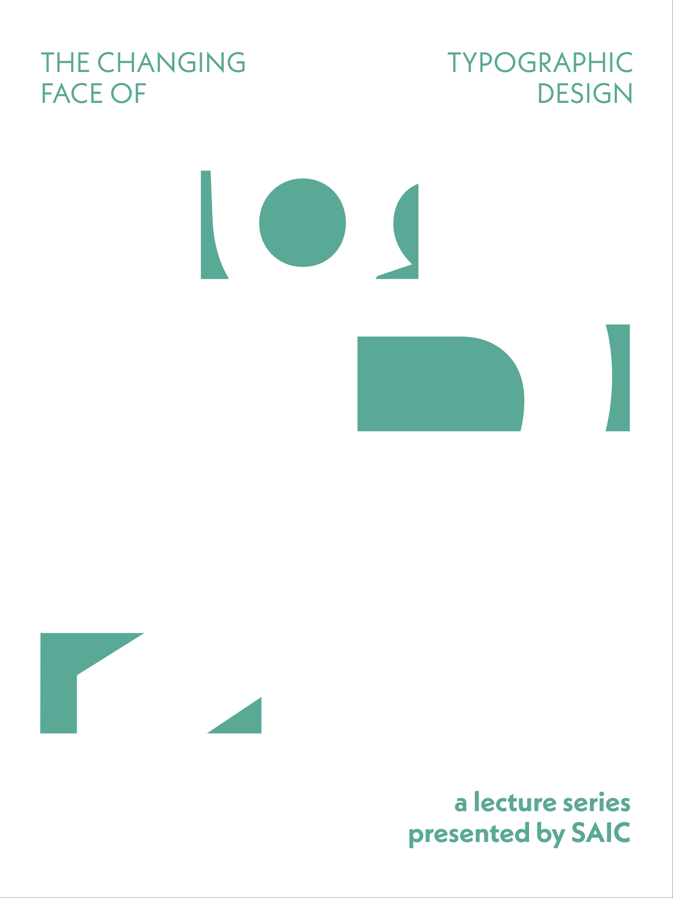
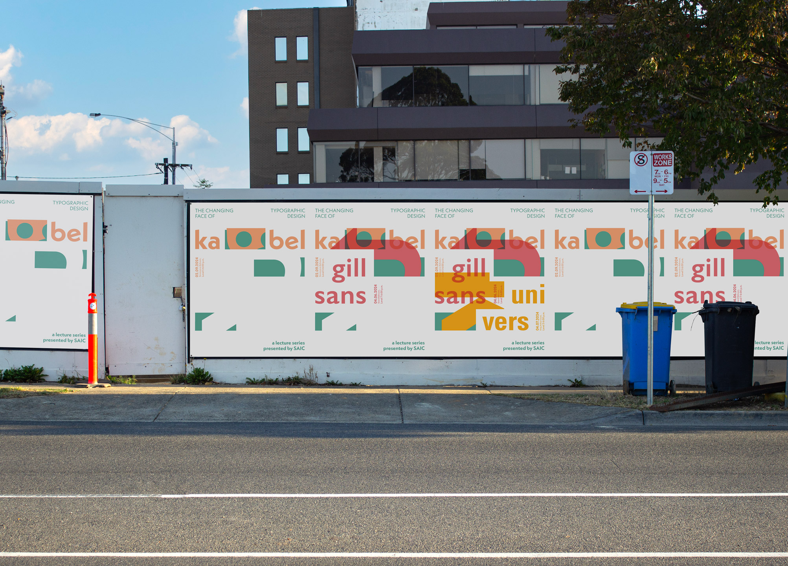
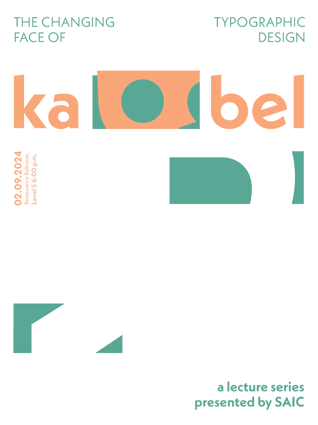
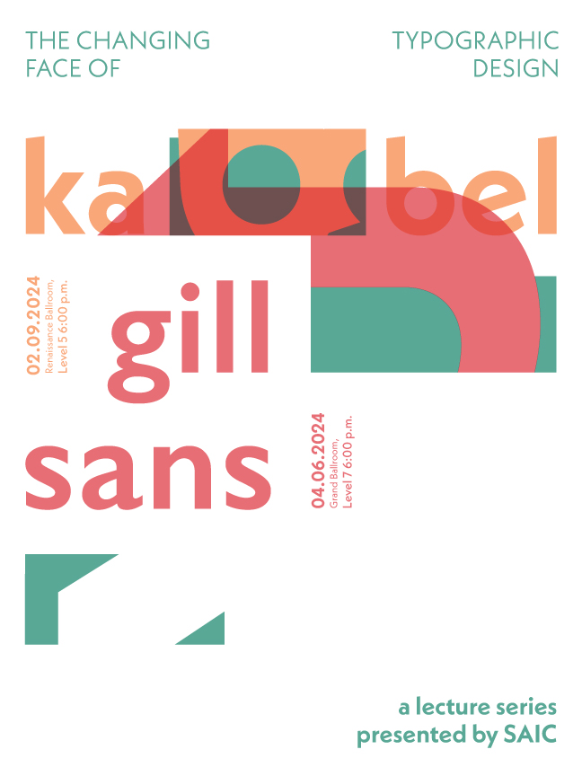
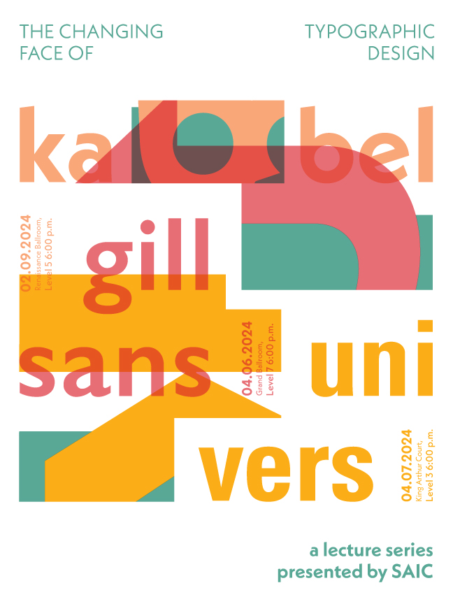

Title: SAIC Typographic Design Lecture Series
Year: 2023
Material: 9x12 Inkjet print
Description: The series of posters introduce a lecture series by SAIC called "The Changing Face of Typographic Design." The posters focus on maintaining legibility of complex information while each are printed over each other. It utilizes positive and negative shapes of each letter form to emphasize the characteristics.





